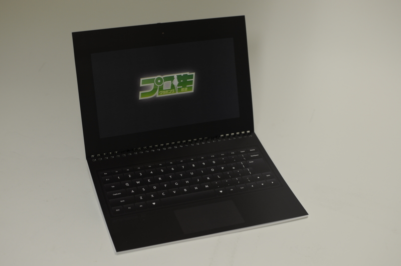
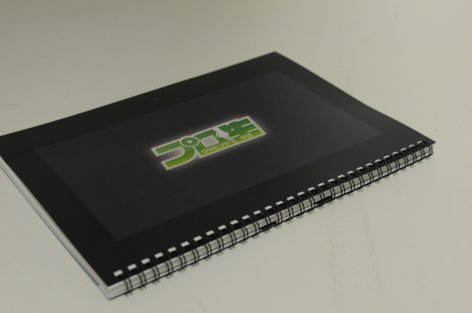
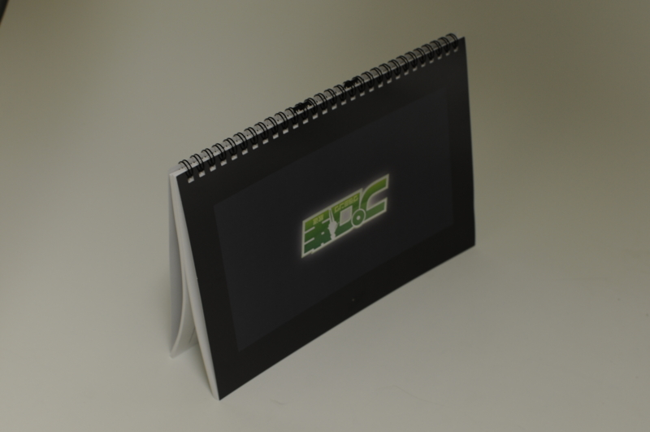
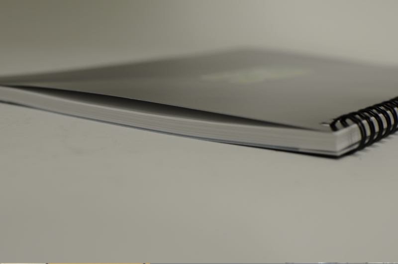
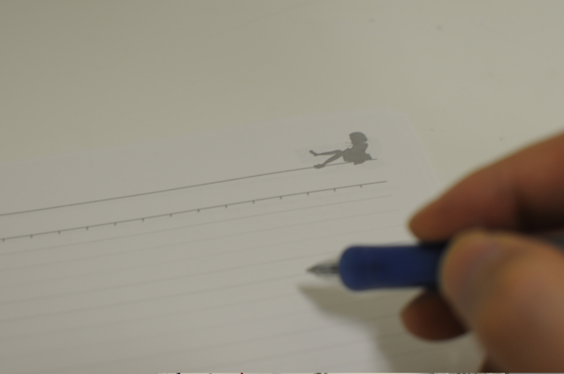
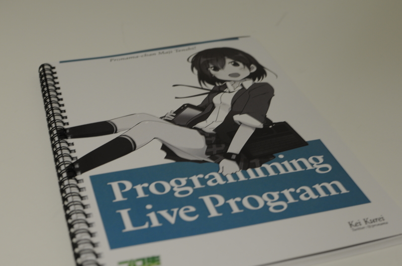

プロ生ちゃん仕様のB5ノートを極秘入手！――その全容を徹底レビュー
公開日：

プログラミング生放送勉強会のアイドル“プロ生ちゃん”こと暮井 慧のオリジナル B5 ノートが“だるろぐ”編集部に送られてきた。さっそくその詳細レビューをお届けしよう。
満足度の高いハードウェア
入手して真っ先に感じたのは、本体の質感の高さだ。無駄がなく洗練されたデザインもさることながら、本体の角や側面の接合部などの仕上げの美しさなどからは、しっかり作り込まれているということが伝わってくる。
“プロ生ちゃん”仕様ということから、噂の段階ですでに期待度の高い製品であったが、実際の製品の完成度は想像以上であった。
ラップトップ、スタンド、テント、タブレットの4モードで使える
本製品は、最近の Windows 8 搭載機ではおなじみの“コンバーチブル”なノートになっており、ラップトップとしてだけでなく、タブレットとして利用することも可能。さらに、ディスプレイ部分を対面の相手に見せるスタンドモード、卓上カレンダーのようにヒンジ部分を上にして置くテントモードで利用することもできる。

（タブレットモード）

（テントモード）
キーボードを使って文書を作成する場合はラップトップモード、タッチ操作やペン入力を行うのならば、スタンドモードやテントモードが適している。用途に応じて、いろいろなモードで利用できることが本製品の魅力と言えるだろう。
充実した基本性能

このように紹介すると「すわ、キワモノか」と思われる読者もいることと思われるが、一般的な利用に必要なスペックは十分に満たしている。
たとえば、ディスプレイ部分はほかの製品と同等以上の視野角を誇る。ほぼ真横から見ても入力した文字がはっきりと識別できるのは、実にたいしたものだ*1。ただし、バックライトが省かれているので、暗い場所では別途照明などを用意すべきだろう。
厚みは一般的なノートと同等に抑えられており、重量も紙でできているのかと疑うほど軽い*2。これならばどこへ持ち運ぶにも苦に感じることはないだろう。もちろん、本製品のキモであるヒンジ部分にも一切の引っ掛かりはない。スムーズにノートを展開することができるはずだ。
そして、もう一つ強調しておきたいのが、バッテリー駆動時間を気にしなくていいという点。新幹線で出張する場合でも、コンセントを確保できるか心配する必要がない。最近はバッテリー駆動時間の長さを謳う製品も多いが、バッテリーを一切消耗しない本製品にはかなわない。
注目の入力機能
さらに、タッチキーボードとペン、二つの操作に対応しているのも見逃せない。
タッチキーボードは薄く、打鍵感がまったくない。指へのフィードバックがないため、常に指の位置を確認しながら入力しないと不安に感じられるのが難点だ。しかし、これも慣れの問題ではないだろうか。
もちろん、評価すべき点もある。まず、なんといっても薄くて軽いこと。そして、物理キーボードのようにキートップが取れたり、キーの印字が剥げるということがないのも評価できる点と言えるかもしれない。
ただし物理キーボードと同様、水濡れにはほとんど耐性がないので、コーヒーをこぼしたりしないように注意しなければならない。

一方、ペン入力に関してはまったく問題ない。古き良き手書きの使い心地を完璧に再現している。罫線には数本おきに濃淡が異なる、少し独特なタイプ。そのためか、文字の大きさを一行の高さに収めてしまおうという意識から解放され、自由に書字できるのが新鮮に感じられる。また、右上にプロ生ちゃんのシルエットが透かしで入っているのがオシャレで、スタバで MacBook Pro とならべて使っても、そうそう見劣りはしない。
デザイン性の高さと圧倒的なモビリティが本製品の魅力

（ディスプレイ背面はオ○イリー社の書籍を模している。マニアにはたまらない演出だ）
本製品に対する印象だが、軽快な動作に加えて、本体、キーボードも含めた優れたデザイン性など、ハードウェアの完成度の高さに非常に大きな魅力を感じる。基本機能も従来製品をほぼ踏襲しており、不満なく利用することができるだろう。価格はまだ発表されていないが、非常にリーズナブルな価格で頒布されるのではないか。
ただ、一点だけ懸念されるのは、その入手性だ。“プロ生ちゃん”を冠した限定モデルであることに加え、これほど凝った造りであることから、生産数は限定的なものになることが予想される。製品を目にする機会はプログラミング生放送勉強会など、非常に限られたものになるはず。見つけたら必ず手に入れておきたいところだ。